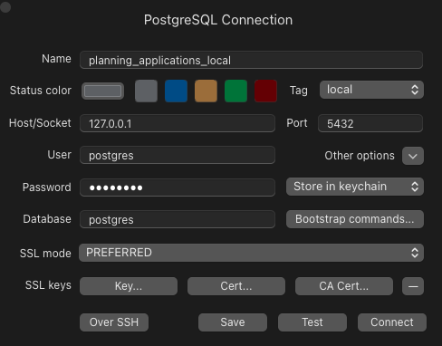

Planning Applications
Dependencies
We are using uv to manage our python dependencies in this project. To get started with uv, following their setup guide.
Project layout
mkdocs.yml # The configuration file.
docs/
index.md # The documentation homepage.
... # Other markdown pages, images and other files.
Getting up and running as a new developer
-
Download Docker if you haven't already
-
Clone the repo
-
Run
cp .env.example .envto create a new .env file. -
Create a Zyte account and paste your API key into the .env file.
-
Run
make reset_dbto set up a fresh postgres database.
You should see something like the following output eventually:
database | 2024-12-28 14:33:31.524 UTC [1] LOG: database system is ready to accept connections
- Connect your database to a GUI

- There are two ways to run the scraper:
Running the scraper in Docker
If you want to test the scraper end to end you probably want to run it in a Docker container.
To do this, set POSTGRES_HOST=db in the .env file.
Then run make run lpa=<LPA_NAME> to run the scraper.
Running the scraper outside of Docker
If you are actively developing, you probably don't want to have to rebuild the scrapy container every time you make a change.
That's okay, because you can still run the scraper outside of the container, but keep it writing to the database inside.
To do this, set POSTGRES_HOST=localhost in the .env file.
Then run uv run scrapy crawl <LPA_NAME> to run the scraper.
Documentation
We are using mkdocs to build the documentation site.
Commands
mkdocs serve- Start the live-reloading docs server.mkdocs build- Build the documentation site.mkdocs -h- Print help message and exit.